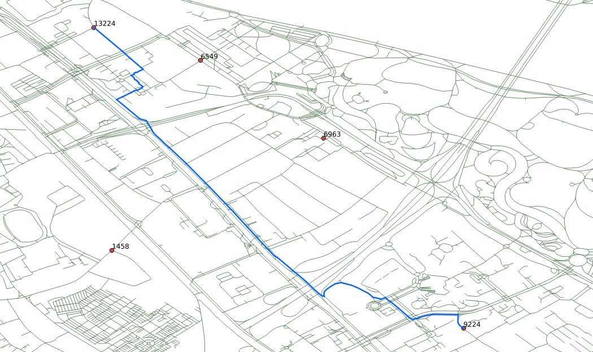

5. pgRouting Algorithms

pgRouting was first called pgDijkstra, because it implemented only shortest
path search with Dijkstra algorithm. Later other functions were added and the
library was renamed to pgRouting. This chapter will cover selected pgRouting
algorithms and some of the attributes required.
5.1. pgr_dijkstra
Dijkstra algorithm was the first algorithm implemented in pgRouting. It doesn’t
require other attributes than id, source and target ID and cost.
You can specify when to consider the graph as directed or undirected.
Signature Summary
pgr_dijkstra(edges_sql, start_vid, end_vid)
pgr_dijkstra(edges_sql, start_vid, end_vid, directed)
pgr_dijkstra(edges_sql, start_vid, end_vids, directed)
pgr_dijkstra(edges_sql, start_vids, end_vid, directed)
pgr_dijkstra(edges_sql, start_vids, end_vids, directed)
RETURNS SET OF (seq, path_seq [, start_vid] [, end_vid], node, edge, cost, agg_cost)
OR EMPTY SET
Description of the parameters can be found in pgr_dijkstra.
Note
- Many pgRouting functions have sql::text as one of their arguments. While
this may look confusing at first, it makes the functions very flexible as
the user can pass any SELECT statement as function argument as long as
the returned result contains the required number of attributes and the
correct attribute names.
- Most of pgRouting implemeted algorithms do not require the network geometry.
- Most of pgRouting functions do not return a geometry, but only an ordered
list of nodes.
Identifiers for the Queries
The assignment of the vertices identifiers on the source and target columns may
be different, the following exercises will use the results of this query.
For the workshop, some locations of the FOSS4G Bonn event are going to be used.
These locations are within this area http://www.openstreetmap.org/#map=15/50.7101/7.1262
SELECT osm_id, id FROM ways_vertices_pgr
WHERE osm_id IN (33180347, 253908904, 332656435, 3068609695, 277708679)
ORDER BY osm_id;
osm_id | id
------------+-------
33180347 | 13224
253908904 | 6549
277708679 | 6963
332656435 | 1458
3068609695 | 9224
(4 rows)
The corresponding id, used in the workshop, and a sample route:
Exercise 1 - “Single pedestrian routing”
- The pedestrian wants to go from vertex 13224 to vertex 6549.
- The pedestrian’s cost is in terms of length. In this case length, which
was calculated by osm2pgrouting, is in unit degrees.
- From a pedestrian perspective the graph is undirected, that is, the
pedestrian can move in both directions on all segments.
SELECT * FROM pgr_dijkstra('
SELECT gid AS id,
source,
target,
length AS cost
FROM ways',
13224, 6549, directed := false);
Solution to Exercise 1
Note
- With more complex SQL statements, using JOINs for example, the result may be
in a wrong order. In that case ORDER BY seq will ensure that the path is
in the right order again.
- The returned cost attribute represents the cost specified in the
edges_sql::text argument. In this example cost is length in unit
“degrees”. Cost may be time, distance or any combination of both or any
other attributes or a custom formula.
- node and edge results may vary depending on the assignment of the
identifiers to the vertices given by osm2pgrouting.
Exercise 2 - “Many Pedestrians going to the same destination.”
- The pedestrians are located at vertices 6549, 1458 and 9224.
- All pedestrians want to go to vertex 13224.
- The cost to be in meters using attribute length_m.
SELECT * FROM pgr_dijkstra('
SELECT gid AS id,
source,
target,
length_m AS cost
FROM ways',
ARRAY[6549, 1458, 9224], 13224, directed := false);
Solution to Exercise 2
Exercise 3 - “Many Pedestrians departing from the same location”
- All pedestrians are starting from vertex 13224.
- The pedestrians want to go to locations 6549, 1458 and 9224.
- The cost to be in seconds, with a walking speed s = 1.3 m/s and t = d/s
SELECT * FROM pgr_dijkstra('
SELECT gid AS id,
source,
target,
length_m / 1.3 AS cost
FROM ways',
13224, ARRAY[6549, 1458, 9224], directed := false);
Solution to Exercise 3
Exercise 4 - “Many Pedestrians going to different destinations.”
- The pedestrians are located at vertices 6549, 1458 and 9224.
- The pedestrians want to go to destinations 13224 or 6963.
- The cost to be in minutes, with a walking speed s = 1.3 m/s and t = d/s
SELECT * FROM pgr_dijkstra('
SELECT gid AS id,
source,
target,
length_m / 1.3 / 60 AS cost
FROM ways',
ARRAY[6549, 1458, 9224],
ARRAY[13224, 6963],
directed := false);
Solution to Exercise 4
Note
Inspecting the results, looking for totals (when edge = -1):
- If they go to vertex 13224: the total time would be approximately:
58.54119347 = 19.9557289926127 + 6.63986000245047 + 31.9456044752323
- If they go to vertex 6963: the total time would be approximately:
41.268599693 = 13.5539128131556 + 8.34274572465808 + 19.3719411554243
5.2. pgr_dijkstraCost
When the main goal is to calculate the total cost, for example to calculate
multiple routes for a cost matrix, then pgr_dijkstraCost returns a more
compact result.
Signature Summary
pgr_dijkstraCost(edges_sql, start_vid, end_vid)
pgr_dijkstraCost(edges_sql, start_vid, end_vid, directed)
pgr_dijkstraCost(edges_sql, start_vid, end_vids, directed)
pgr_dijkstraCost(edges_sql, start_vids, end_vid, directed)
pgr_dijkstraCost(edges_sql, start_vids, end_vids, directed)
RETURNS SET OF (start_vid, end_vid, agg_cost)
OR EMPTY SET
Description of the parameters can be found in pgr_dijkstraCost
Exercise 5 - “Many Pedestrians going to different destinations returning aggregate costs.”
- The pedestrians are located at vertices 6549, 1458 and 9224.
- The pedestrians want to go to destinations 13224 or 6963.
- The cost to be in minutes, with a walking speed s = 1.3 m/s and t = d/s
- Result as aggregated costs.
SELECT *
FROM pgr_dijkstraCost('
SELECT gid AS id,
source,
target,
length_m / 1.3 / 60 AS cost
FROM ways',
ARRAY[6549, 1458, 9224],
ARRAY[13224, 6963],
directed := false) ORDER BY end_vid;
Solution to Exercise 5
5.3. pgr_astar
A-Star algorithm is another well-known routing algorithm. It adds geographical
information to source and target of each network link. This enables the routing
query to prefer links which are closer to the target of the shortest path
search.
Signature Summary
pgr_costResult[] pgr_astar(sql text, source integer, target integer, directed boolean, has_rcost boolean);
Returns a set of pgr_costResult (seq, id1, id2, cost) rows, that make up a path.
Description of the parameters can be found in pgr_astar.
Exercise 6 - “Single Pedestrian Routing with Astar.”
- The pedestrian wants to go from vertex 13224 to vertex 6549.
- The pedestrian’s cost is length, in this case length is in degrees.
SELECT seq, id1 AS node, id2 AS edge, cost FROM pgr_astar('
SELECT gid::integer AS id,
source::integer,
target::integer,
length::double precision AS cost,
x1, y1, x2, y2
FROM ways',
13224, 6549, false, false);
Solution to Exercise 6
Note
- The result of Dijkstra and A-Star might not be the same, because of the
heuristic component.
- A-Star is theoretically faster than Dijkstra algorithm as the network size
is getting larger.
- A new Version of A-Star is under development.
There are many other functions available with the latest pgRouting release, most
of them work in similar ways. For the complete list of pgRouting functions see
the API documentation: http://docs.pgrouting.org/
 Workshop FOSS4G Bonn
2016
Workshop FOSS4G Bonn
2016
{kind=link}